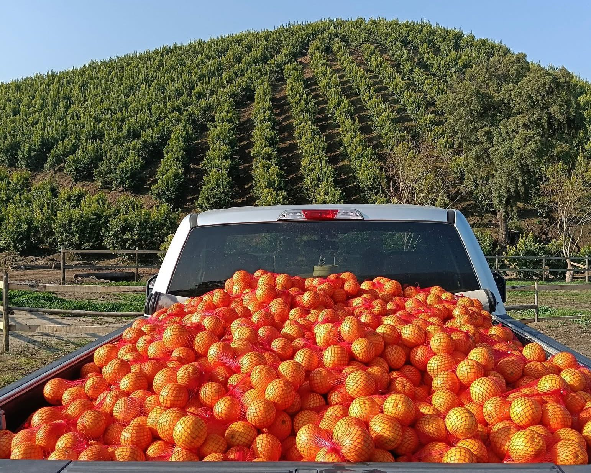
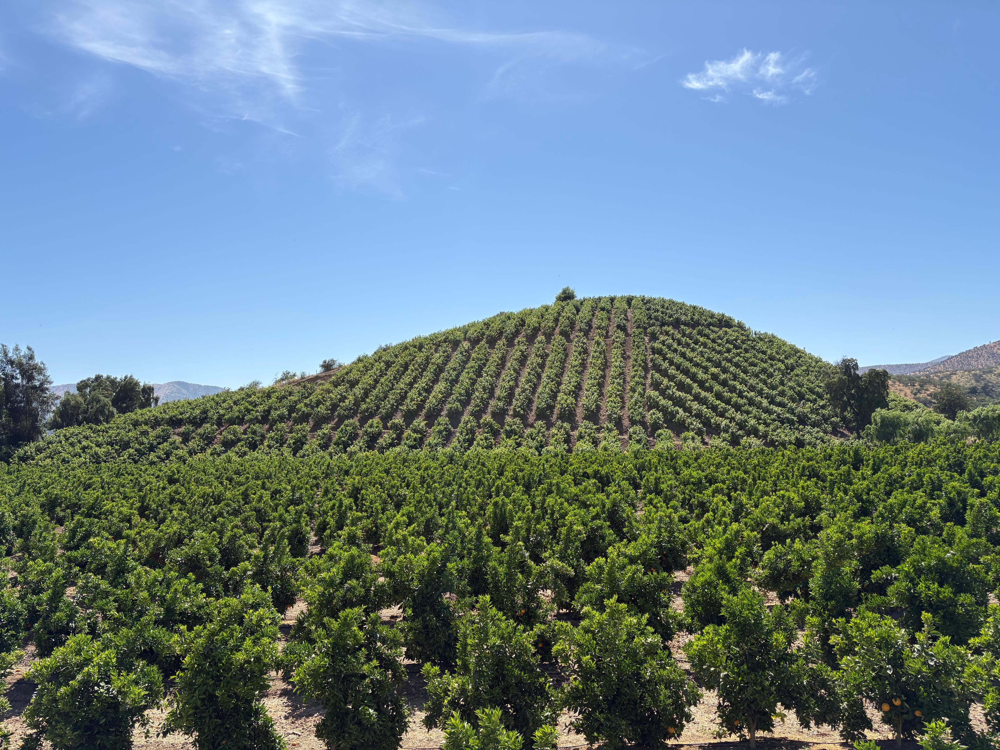

Mallarauco • Chile
Sobre Nosotros
Calidad, trazabilidad y sustentabilidad. Conoce quiénes somos, el equipo y nuestras instalaciones.
Calidad, trazabilidad y sustentabilidad. Conoce quiénes somos, el equipo y nuestras instalaciones.
Somos un packing mayorista de cítricos. Proveemos fruta de alta calidad a cadenas y distribuidores, combinando selección rigurosa, control de trazabilidad y procesos de packing orientados al mercado B2B.
Operamos con un enfoque sustentable. Nuestro equipo técnico y logístico garantiza continuidad operacional, almacenamiento en frío y cumplimiento de estándares sanitarios y comerciales.
Compromiso real con el entorno: operación eficiente con uso de tecnología y prácticas sustentables.
Nuestro packing integra paneles solares que aportan energía limpia, disminuyendo la huella de carbono y asegurando una operación estable durante la temporada alta.
La polinización por abejas es clave para nuestra producción: mejora el cuajado, la calidad y la consistencia de los frutos, apoyando además la biodiversidad en nuestros predios.